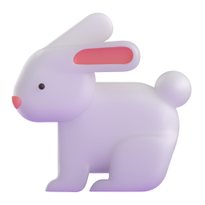

Choose your child’s Year 1 term, then help them sound out the word and blend the sounds together. They tap the matching picture.
A fresh mix every round, with no timer.
A wrong guess costs one heart. They can try a different picture.
Look at the picture and tap word parts in order. Two extra pieces appear in Autumn; three appear in Spring and Summer. Tap a placed part to put it back, or use the amber Reset word button. A completed word checks automatically: correct words chime and advance; incorrect words pop and clear the pieces. Each new incorrect word costs a heart. Ten completed words earn a surprise animal celebration.
Autumn revisits familiar sounds and introduces patterns such as ou. Spring adds alternative spellings and split digraphs, as in cake. Summer practises more spellings and words with two syllables.
These are broad practice groups based on phonics progression used in England, not a school-specific teaching scheme. Term timings and year names vary across the UK. Choose an earlier set whenever that suits your child.
No accounts, adverts or tracking. Sound is optional. Round progress stays only in this open tab.
Please enable JavaScript to play the games.